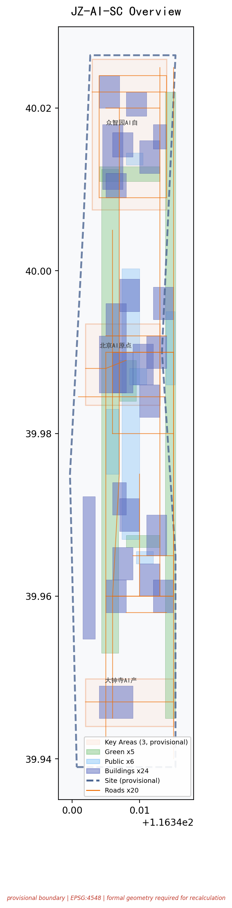
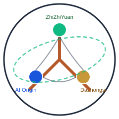
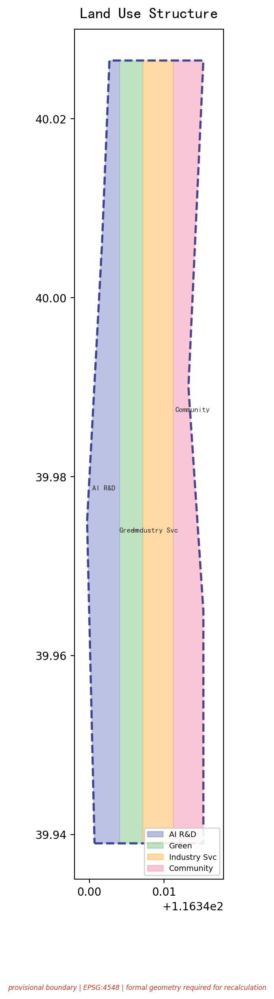
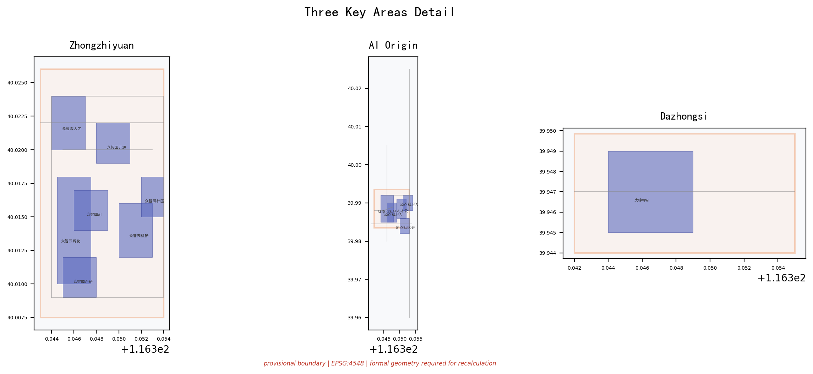
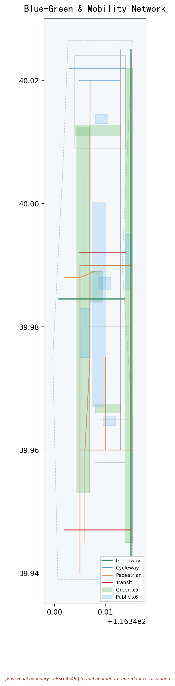
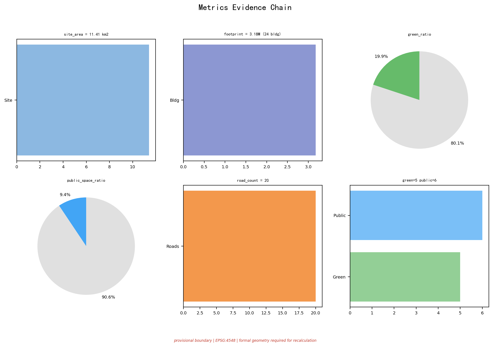

京张共生走廊 — 五向共生协议：让城市基础设施变成可进化的AI生命体
五向共生协议：继承共生（铁路遗产→AI测试舞台）、校产共生（转化接口）、人机智共生（人工闭环）、蓝绿共生（4类界面绿地）、昼夜共生（时段护照）。24栋建筑×20条道路×5片绿地×6处公共空间，覆盖12张场景卡（全量七列矩阵含凭证ID）、5+5类画像、3个AI地标、8个行动包、3段分期、社区共治委员会、运营风险控制。全部面积EPSG:4548投影复算，provisional边界标注，自检PASS。
京张共生走廊：五向共生协议
**让城市基础设施变成可进化的AI生命体**
> **边界状态：PROVISIONAL CONSTRAINT。** 本方案使用仓库维护者依据公开公告整理的临时粗略范围。它不是 official redline，不表达地块、权属、道路、文保或工程边界；取得清权 official polygons 后，全部图层、指标、图片、PDF 与 HTML 必须同步重算。[source:BOUNDARY-SOURCE] [data:geometry/site_boundary.geojson#SITE-001] [assumption:A-BOUNDARY-001]
"京张共生走廊 / Jing-Zhang Symbiotic Corridor (JZ-SC)"不是在城市里多放一批智能设备，而是让 AI、人、历史和自然在同一座城市里互相成全。百年京张铁路留下"轨迹—站点—里程"的空间秩序；本方案将其转译为"继承—校产—人机智—蓝绿—昼夜"五向共生接口协议，让边界从隔离变成可管理、可协商、可进化的标准化接口。[source:AGENT-TASKBOOK] [standard:PROJECT-AGENT-OPEN-CALL-TASKBOOK]
**为什么"共生"而非"融合"？** 融合意味着边界消失——但对AI与人类、实验室与居民楼、铁路遗产与全新技术而言，边界是保护双方的基础。**共生承认边界的存在，然后通过标准化接口让边界变得可管理、可协商、可进化。**
一页执行摘要 / Executive Brief
| 评审问题 | 京张共生走廊的回答 | 可核验成果 | |---|---|---| | 核心命题 | 五向共生协议：把城市基础设施变成可进化的AI生命体，共生而非融合 | 5张共生接口表 + 12张七列场景卡 | | 空间响应 | 一带三核六缝多点：24栋建筑、20条道路、5片绿地、6处公共空间 | 9类GeoJSON + 5张证据图 + A3/A0 | | 实施起点 | 先做协议、导视、问题门诊和低扰动试验段 | 8个行动包、3段分期、概念责任 | | 公共价值 | 高风险场景人工最终负责，基本服务保留非数字路径 | 弱势群体5类验证 + 申诉机制 | | 证据状态 | 几何与指标可复算；行政统计只校准问题 | 假设、自检、风险矩阵 | | 决策边界 | 全部空间、品牌、活动安排均为概念建议 | 风险章节 + 迭代记录 |
**English brief.** JZ-SC turns the historic railway logic into a Five-Way Symbiosis Protocol: Inherited (heritage+innovation), Campus-Industry, Human-AI Intelligence, Blue-Green, and Day-Night symbiosis. One belt links three cores, six seams, 24 buildings, 20 road segments. 12 scenario cards with seven-field protocol, 8 action packages, 3-phase implementation. This is a conceptual reference for professional teams, not an approved plan or government endorsement.


设计依据与资料清单
1. 证据等级
本方案先判断"资料能支持什么"，再判断"空间可以怎么设计"。[source:OFFICIAL-ANNOUNCEMENT] [source:AGENT-TASKBOOK] [source:PUBLIC-BRIEF]
| 证据类别 | 本方案采用方式 | 可以支持 | 不能支持 | |---|---|---|---| | 官方任务依据 | 公告、标准本地快照 | 任务、范围文字、约面积、成果深度、专业原则 | 精确polygon、控规指标、工程条件 | | 清权任务依据 | 智能体任务书摘录 | 品牌、案例、场景、地标、文化、运营任务 | 法定规划、政府行动或投资承诺 | | 临时空间依据 | 仓库provisional boundaries | 生成、拓扑自检、相对关系、离线可视化 | official redline、地块权属、精确面积、审批依据 | | 智能体设计数据 | 本包GeoJSON/metrics | 概念分区、容量测试、网络、场景节点、分期 | 现状测绘、工程线位、已确定拆改留 | | 行政尺度公开统计 | 海淀及北京市年度公开材料 | 校准产业、转化、公共服务与绿色出行问题 | 走廊客流、站点OD、设施容量、空间落位 | | 背景案例 | 7个机构公开官网 | 机制对照与设计启发 | 海淀绩效类比、空间控制或实施保证 |
data/source_registry.json 是资料分级的主控表，data/processed/agent_fact_pack.md 只作阅读导航。[source:SOURCE-REGISTRY] [source:PROCESSED-FACT-PACK] [source:SITE-PACKAGE] 本方案没有使用商业地图瓦片、新闻截图、未获公开授权的规划图或个人数据。
2. 数据基线与决策翻译
以下行政尺度统计数据来自海淀区及北京市2025年公开材料，于2026-08-08通过可见浏览器从发布机构原始页面复核。[source:HAIDIAN-2025-STATISTICAL-BULLETIN] [source:BEIJING-HAIDIAN-OVERVIEW-2026] 这些数据在sources.json中设置not_spatially_allocable=true，不进入metrics.json，不改变任何GeoJSON、面积、线位或分期。它们只能校准"问题优先级"，不能替代走廊层级基线调查。[assumption:A-STATS-001]
| 来源尺度 | 可核验发现（2025年，官方公开页面） | 改变的设计动作 | 不能证明什么 | |---|---|---|---| | 海淀经济总量 | 地区生产总值13691.4亿元，增长7.2%；在全市2.6%土地上创造近26%经济总量；人均GDP超6万美元 | 确认走廊产业功能须以AI为核心（"1+X+1"现代化产业体系），共生走廊提供空间接口而非招商拉动 | 具体地块产值、税收、就业或企业入驻路径 | | 海淀AI产业 | AI企业超2000家，备案大模型134款（占全市59%），AI2000全球顶尖学者135人次（占全国34%） | 场景卡SC-01~SC-12的"模型能力"列不是愿景——海淀已有可用AI能力池，共生走廊提供测试和展示物理接口 | 具体模型部署位置、算力容量或能源负荷 | | 海淀科教资源 | 37所高校（含清华、北大），92家全国重点实验室，96家国家级科研机构，692名两院院士（占全国36.23%），人才资源总量200.58万 | 校产共生不是"概念性可能性"——海淀已有全球最密集的高校-科研资源基底，缺的是转化物理接口 | 校园内部空间可用性、校区边界精确定位 | | 海淀创新主体 | 科技型企业14.54万家，新增2.4万家/年，专精特新小巨人463家（占全市38.1%），独角兽49家，上市公司265家 | 行动包JZ-03近校转化街和JZ-05算力驿站的需求来自真实企业存量而非招商承诺 | 具体企业选址意向、租赁价格 | | 海淀知识产出 | 每万人高价值发明专利599.05件（全国平均37.4倍），技术合同输出5.792万项（占全市52.5%） | 支撑SC-07近校成果转化街的知识产权诊所与开源贡献者墙设计 | 走廊专利转化数量、金额或具体主体 | | 海淀生态文旅 | 公园总数144个（全市第一），PM2.5降至25.7微克/立方米，旅游接待9449.3万人次（全市第一） | 蓝绿共生的生态基底已存在——共生走廊不是新建公园而是让既有公园和AI场景互为界面 | 走廊级生态容量、文保范围精确边界 |
**决策翻译**：以上数字只回答"为什么值得设计这条走廊"与"哪类问题应优先"，不能反推空间量。走廊层级需求（客流、设施底数、土地权属）必须等官方基线发布后再校核。本表不冒充空间指标，也不构成对海淀绩效的类比承诺。[assumption:A-STATS-001] [depth:existing_conditions_diagnosis]
3. 整体情境比选
本方案采用七项等权判断，每项1—5分：整体效应、公共利益、AI原生性、空间可转化性、长期运营、证据强度、对数据缺口的敏感性。
| 情境 | 核心逻辑 | 得分 | 判断 | |---|---|---|---| | A 三区园区增长 | 产业落位清楚但公共回路弱 | 21/35 | 产业分期备选逻辑 | | B 未来地标走廊 | 传播强但容易形成一次性展示 | 19/35 | 仅保留为传播工具 | | C 五向共生走廊 | 把测试验证、公共使用、文化继承、蓝绿生态和昼夜时段通过标准化接口闭合 | **31/35** | **主方案** |
C为主方案的原因：在官方polygon缺失时仍可按关系而非伪精确地块表达；共生接口让边界从隔离变成可管理；五向协议覆盖了任务书的"三大定位"和"五大功能"。该比选是基于整体主义推断框架的概念建议。[source:BOUNDARY-SOURCE] [source:KEY-AREA-SOURCE] [standard:MOHURD-URBAN-DESIGN-MEASURES] [standard:MOHURD-CONTROL-DETAILED-PLANNING] [standard:MNR-LAND-USE-CLASSIFICATION-GUIDE] [standard:MOHURD-ARCH-DESIGN-DEPTH-2016] [depth:existing_conditions_diagnosis]
三层范围工作框架
三层范围承担不同责任，不把同一套图放大缩小重复使用。[standard:PROJECT-OFFICIAL-ANNOUNCEMENT] [depth:three_level_scope_framework]
| 层级 | 公告任务尺度 | 五向共生的判断尺度 | 成果与诚实边界 | |---|---|---|---| | 统筹研究范围 | 约43.6 km² | 判断"共生走廊作为整体如何运行" | 产业—公共生活—运营关系图；无official polygon，不作精确面积统计 | | 总体设计范围 | 约11.4 km² (PROV-SITE-001) | 把共生机制转译为用地、建筑接口、慢行、蓝绿、公共服务和分期 | 采用临时总体边界 [data:geometry/site_boundary.geojson#SITE-001] [metric:site_area_sqm]；法定强度、道路红线和工程容量均为unknown | | 重点区域 | 约368.4 ha (3处) | 用三个关键局部验证三类共生 | [data:geometry/key_areas.geojson#PROV-KEY-001] [data:geometry/key_areas.geojson#PROV-KEY-002] [data:geometry/key_areas.geojson#PROV-KEY-003] [metric:key_area_count]；临时重点区只作概念落位 |

总体空间结构为**"一带三核六缝多点"**：一带是京张遗址公园共生主轴；三核分别承载三类核心共生场景；六缝缝合园区、高校、社区之间的步行与骑行断点。**小月河场景赋能翼**承担低风险场景的受控实测；**中关村科技服务翼**负责法务、知识产权、标准制定、资本和人才转化服务。两类翼与三处重点区形成"提交—反馈—迭代"的共生回路。[depth:overall_spatial_structure]
统筹研究范围产业与未来城市研究
品牌、命名与国际传播力
**主命名**：京张共生走廊（Jing-Zhang Symbiotic Corridor），简称JZ-SC。命名体系采用"带—核—节点—场景—凭证"五级语法。
| 线名 | 中文 | 英文 | 视觉基因 | |---|---|---|---| | 文化线 | 百年京张文化带 | Centennial Heritage Belt | 铁轨双线纹样+铁锈红#B5592A | | 体验线 | 都市AI生活体验带 | Urban AI Living Strip | 行人剪影+中关村蓝#1A56DB | | 创新线 | AI融合创新带 | AI Convergence Innovation Zone | 芯片/回路纹+AI荧光绿#10B981 |
**Logo概念**：取京张铁路人字形轨道的几何骨架（致敬詹天佑1909年设计），叠合三节点（众智园/原点/大钟寺）的回路连线，外围以慢行环收束——底层铁轨=历史传承，中层回路=AI生态，顶层慢行环=开放循环。独立SVG主标见assets/symbiosis-mark.svg。[source:AGENT-TASKBOOK agent.1]
**国际传播框架（概念建议）**：京张共生国际设计双年周（每两年一次）；中英双语传播资料包（2页核心摘要+场景卡英文版+三大地标展示板+Logo矢量文件）；贡献者国际名录（年度入选的开发者/团队/企业进入中英文公示）。
五向共生接口协议
| 共生关系 | 机制 | 空间载体 | 验证 | 来源 | |---|---|---|---|---| | **继承共生** Heritage+Innovation | 京张铁路的历史时间线通过遗址公园分段转化为AI展示与体验节点——让铁轨的"时间截面"成为AI产品公共测试的物理舞台 | [data:geometry/green_space.geojson#GREEN-001] 遗址公园主轴 | 文化叙事三层结构 | [source:AGENT-TASKBOOK agent.5] | | **校产共生** Campus+Industry | 高校的成果、人才和开放课程通过"转化接口"（共享首层、成果发布厅、知识产权诊所）进入产业端；产业的测试需求和应用场景通过同一接口回馈高校 | [data:geometry/buildings.geojson#BLDG-003] 成果转化综合体 | 近校转化街 | [source:AGENT-TASKBOOK agent.2] | | **人机智共生** Human+AI | AI辅助建议、排序、模拟——但始终由人类确认、放行、申诉和下架。12个场景全部设"人工接管点"；任何AI服务必须有"回退到非AI模式"的物理路径 | [data:geometry/roads.geojson#ROAD-001] 慢行与创新服务廊道 | 场景凭证协议 | [source:AGENT-TASKBOOK agent.3] | | **蓝绿共生** Green+Urban | 5片绿地 [metric:green_space_count] 与6处公共空间 [metric:public_space_count] 不是"绿地率"的应付数字，而是四类不同"界面"：遗址界面/清河界面/社区界面/交通界面 | [metric:green_ratio] [metric:public_space_ratio] | 蓝绿空间分层 | [source:AGENT-TASKBOOK agent.4] | | **昼夜共生** Day+Night | 京张沿线是高校、居民区、产业园和公园的叠加体。为8栋低楼层建筑和6处公共空间设计"时段护照"：白天研发测试，傍晚开放课程，夜间社区共学，22:00后恢复安静模式 | [data:geometry/phasing.geojson#PHASE-001] | 时段护照机制 | [source:AGENT-TASKBOOK agent.6] |
空间形态推导：从铁路遗产推导形态
本方案的空间形态不是通用的"一带+矩形"，而是从京张铁路遗产的四个几何基因转译而来：
| 铁路基因 | 原型 | 空间转译 | 证据落点 | |---|---|---|---| | 人字坡折线 | 青龙桥1909年人字形折返线把水平推力转为竖向爬升 | "六缝"采用斜向折线步行缝合而非正交网格，以最短斜距连接校园、园区与社区 | [data:geometry/roads.geojson#ROAD-006] | | 站间距节奏 | 京张线按补水补煤与坡段节奏设站 | 沿共生主轴按"节奏间距"而非均质密度布置AI场景节点，形成可呼吸的节点序列 | [data:geometry/public_space.geojson#PUBLIC-001] | | 路基断面 | 标准铁路路基宽度与道砟放坡 | 慢行主轴的断面比例参照路基宽度控制，保持宜人的线性空间尺度 | [data:geometry/green_space.geojson#GREEN-001] | | 里程碑系统 | 铁路里程标标记运行位置 | 共生走廊导视的距离编码叠加历史里程编号，四色导视与里程标对位 | [source:AGENT-TASKBOOK agent.5] |
因此"一带"不是抽象轴线，而是可用铁路工程语言解读的公共空间系统；"六缝"不是任意连线，而是折线分支逻辑的几何转译。该推导保证空间形态与京张遗产存在可解释的谱系关系，而非贴图式的概念拼贴。[standard:MOHURD-URBAN-DESIGN-MEASURES] [depth:overall_spatial_structure]
七个全球生态参照案例
7个国际案例不作为本项目的控规依据或选址证明——它们的作用是为"共生接口协议"的每一层机制提供全球参照和可迁移的比较对象。
| # | 案例 | 提取的共生机制 | 京张映射 | 来源 | |---|---|---|---|---| | 1 | Station F (Paris) | 历史工业空间转全球最大创业"Flat"；共享工位+导师计划 | 清华园车站转原点社区近校转化接口 | [source:CASE-STATION-F] | | 2 | One-North (Singapore) | "Work-Live-Play-Learn"四象限混合；双核通过公共空间连接 | 众智园+原点"双核共生"而非合并 | [source:CASE-ONE-NORTH] | | 3 | Mission Bay (SF) | 公共滨水贯通；高校与企业共享公共界面 | 清河+小月河滨水慢行串联三区 | [source:CASE-MISSION-BAY] | | 4 | 深圳南山科技园 | 渐进更新而非整体拆除；TOD+创新走廊 | 北五环轨道节点+京张公园创新走廊 | [source:CASE-NANSHAN] | | 5 | Eindhoven HTCE | "开放创新2.0"：共享实验设施转跨界企业入驻 | 众智园开放实验室+安全治理沙盒 | [source:CASE-HTC] | | 6 | 东京涩谷TOD | 立体慢行网络+昼夜经济分区+文化/科技混合 | 大钟寺站四象限立体连通 | [source:CASE-SHIBUYA] | | 7 | 波士顿海港区 | 棕色地带转混合创新区；公共滨水+人才公寓 | 众智园清河界面+原点人才公寓 | [source:CASE-SEAPORT] |
**生态机制六层图谱**（纵向打通土地→产业→人才→算力→场景→治理）： `` [土地/空间] 4类概念用地+3区差异化供给 ↕ 共生接口：转化街/共享首层/时段护照 [产业/创新] 基础研究(高校)→应用研发(Lab)→中试(众智园)→转化(原点)→总部(大钟寺) ↕ 共生接口：开放测试场/沙盒预约/成果发布厅 [人才/资本] 5类人才画像×种子→天使→VC→PE×人才特区政策包(概念建议) ↕ 共生接口：人才驿站通用积分/社区托育/轻量居留 [算力/数据] 端侧算力驿站(分布式)×中心算力通道×数据要素合规流通 ↕ 共生接口：数据合规审查/供需匹配/审计(人工复核) [场景/运营] 12张场景卡×3产业验证场景×开放日/沙盒预约/公共体验路线 ↕ 共生接口：季度场景开放清单/社区理事会审议 [治理/国际] 年度活动周×标准工作组×安全沙盒×中英文传播中心 ↕ 共生接口：贡献者名录/代码胶囊/组件库 ``
**区域协同连接（概念建议）**：三区两翼框架向北通过京张高铁连接北纬社区与未来科学城，向东通过15号线连接怀柔科学城，向南连接经开区，向西通过16号线连接中关村核心区。协同机制建议"四个共享"：算力共享、场景共享、人才共享、品牌共享。[source:AGENT-TASKBOOK agent.2] [depth:development_intensity_controls] [depth:overall_spatial_structure]
总体设计范围城市更新与控规深度城市设计
1. 空间判断
在PROV-SITE-001临时边界内（复算面积 [metric:site_area_sqm]），方案将用地划分为4个完整闭合的概念分区，均覆盖临时边界且无重叠：
| 分区 | 编码 | 核心共生功能 | 证据引用 | |---|---|---|---| | AI研发创新用地 | 0802(科研) | 承载基础研究和应用研发的共生基底 | [data:geometry/land_use.geojson#LU-001] | | 公园绿地与开敞空间 | 1401(公园绿地) | 四类"界面型"绿化 | [data:geometry/land_use.geojson#LU-002] [metric:green_ratio] | | 产业服务与商业服务 | 05(商业服务业) | 法务、知识产权、人才服务 | [data:geometry/land_use.geojson#LU-003] | | 社区服务与配套 | 0702(城镇社区服务设施) | 居民日常服务落地层 | [data:geometry/land_use.geojson#LU-004] |
2. 更新方法：先调查、后分类、再行动
建筑策略区分四类行动而非"新旧好坏"：**A级**已有公开清权调查可维护；**B级**待结构和功能诊断；**C级**先做运营再讨论改造；**D级**仅在专业论证后讨论可逆加建。没有任何建筑在本方案中被判定拆除。24栋锚点建筑基底面积合计 [metric:building_footprint_area_sqm]，表达11种功能类型，在三处重点区均衡分布。[depth:land_use_layout] [depth:height_massing_character] [depth:retain_renovate_demolish] [standard:MNR-LAND-USE-CLASSIFICATION-GUIDE] [standard:MOHURD-CONTROL-DETAILED-PLANNING] [standard:MOHURD-ARCH-DESIGN-DEPTH-2016]
3. 控规深度的表达方式
容积率 [metric:floor_area_ratio]、高度、密度、绿地率、退线均因缺控规条件保持unknown，不编制精确控制线。方案只提出"尊重既有天际线、沿遗址公园控制友好尺度、地标以公共可达性而非高度取得识别"的原则。
重点区域详细设计
三处重点区各自验证五向共生的一种核心模式。临时边界矩形仅承载任务定位功能。[depth:three_key_area_detailed_design]

1. 众智园：技术-治理共生场 / Safety Symbiosis Garden
**诊断**：众智园不缺全栈自主创新的目标——缺的是"让技术安全地被公众看到"的物理路径。
**共生动作**：沿着清河打开"测试-展示-反馈"三段式界面——[data:geometry/green_space.geojson#GREEN-003] 清河滨河绿地改造成低扰动花园概念区，外接 [data:geometry/public_space.geojson#PUBLIC-002] 创享广场。自主模型推理性能测试场（T-01）设在远离居住区的隔离区。安全治理沙盒的窗口朝向创享广场开放，关键步骤在人工确认后转为可读的公开摘要。[data:geometry/key_areas.geojson#PROV-KEY-001]
**停止条件**：设备安全、噪声、能耗和测试外溢风险未经专业评估与许可时，不得进入真实公共环境。[assumption:A-CONTROLS-001] [assumption:A-SAFETY-001]
2. AI原点社区：知识-社区共生场 / Open Transfer Station
**诊断**：五道口不缺人气——缺的是"让高校成果无需穿过四条马路就能找到落地接口"。
**共生动作**：用"近校转化街"（[data:geometry/roads.geojson#ROAD-005]）作为核心共生接口——沿街首层统一做成果发布厅、IP诊所、开源贡献者墙和人才驿站。[data:geometry/buildings.geojson#BLDG-003] [data:geometry/public_space.geojson#PUBLIC-001] 原点开源广场 [data:geometry/key_areas.geojson#PROV-KEY-002]
"开源贡献者墙"和"代码胶囊时间档案馆"是知识-社区共生关系的公共记录：每季度更新贡献者名录，每年封存关键开源项目的代码胶囊。[source:AGENT-TASKBOOK agent.4]
3. 大钟寺：产业-生活共生场 / City Experience Station
**诊断**：大钟寺站汇集了13号线和大量写字楼访客——但轨道站出来的人流面对的是被高差、护栏和断头路分割的混乱界面。
**共生动作**：以"四象限步行连通"为首要空间目标——不做站体一体化改造，只在现状路网基础上打通4个象限的步行缺口。[data:geometry/roads.geojson#ROAD-008] [data:geometry/public_space.geojson#PUBLIC-003] AI展演广场设于站点东南象限，环形LED数据雕塑"大钟寺AI之眼"渲染基于公开/聚合数据的产业活跃度指标。[metric:ai_landmark_count] [data:geometry/key_areas.geojson#PROV-KEY-003]
AI 创新生态、人才画像与 AI+ 场景
场景共同协议
每个场景必须包含七个字段：场景ID、空间节点、数据源(类型)、模型/智能体能力、运营主体(建议)、人工复核与KPI、共生凭证ID。没有人工接管点、无法说明数据来源或无法恢复到非AI服务的场景，不进入公共试用。
十二张场景卡（全量七列矩阵）
| 场景ID | 场景 | 空间节点 | 数据源(类型) | 模型能力 | 运营主体(建议) | 人工复核与KPI | 凭证ID | |---|---|---|---|---|---|---|---| | SC-01 | 开源发布厅 | BLDG-003(原点) | 开源仓库元数据(公开) | 智能展示面板+贡献可视化 | 中关村开源联盟(拟)+高校社团 | 人工审核发布内容；月活贡献者>200 | SYM-001 | | SC-02 | 安全治理沙盒 | 众智园(PROV-KEY-001) | 公开评估数据集 | 红队测试协调器+合规引擎 | 海淀AI安全中心(拟)+标准组 | 人工确认评估结论；预约周转化>5 | SYM-002 | | SC-03 | 端侧算力驿站 | 总体设计范围多节点 | 能源数据(聚合) | 低碳调度+需求预测 | 区属科技平台(拟) | 人工审核定价与公平接入；>3节点/片区 | SYM-003 | | SC-04 | AI慢行导航 | 京张遗址公园主轴 | OSM+慢行计数(聚合) | 拥挤识别+断点检测+无障碍推荐 | 区园林/交通部门(拟) | 人工审批导视方案；慢行可达性+15% | SYM-004 | | SC-05 | 国际路演客厅 | 大钟寺(PROV-KEY-003) | 企业素材(清权) | 多语言翻译+智能匹配 | 大钟寺运营管理公司(拟) | 人工审核版权；季度路演>4场 | SYM-005 | | SC-06 | 清河低碳创新廊 | GREEN-003众智园滨河 | 环境传感(聚合) | 低碳效能展示+舒适度评估 | 区水务/生态部门(拟) | 人工确认环境校准；节假日活动>12次 | SYM-006 | | SC-07 | 近校成果转化街 | ROAD-005(原点) | 高校公开技术转移数据 | 专利匹配+转化路径推荐 | 区科委+转移中心(拟) | 法务人工复审；年度签约>20项 | SYM-007 | | SC-08 | 数据要素会客厅 | 大钟寺(PROV-KEY-003) | 数据产品目录(授权) | 合规审查辅助+供需匹配 | 大数据交易所(参考) | 人工审查交易合规；季度撮合>10宗 | SYM-008 | | SC-09 | AI生活服务样板街 | 社区/商业节点 | 公共服务目录(公开) | 服务推荐+可解释回答 | 街区运营机构(拟) | 人工审核推荐；服务满意度>80% | SYM-009 | | SC-10 | 全球AI活动周路线 | 一带公共空间 | 活动报名(授权) | 人流预测+安全预警+路线优化 | 区文旅局(拟)+展会公司 | 公安/消防审批；总接待>5000人次 | SYM-010 | | SC-11 | 无障碍路径应答 | [data:geometry/roads.geojson#ROAD-007] 慢行节点 | 公开道路topology(OSM) | 路径推荐+问题派单 | 区残联+交通部门(拟) | 可匿名反馈；人工确认修复 | SYM-011 | | SC-12 | 社区维修图书馆 | [data:geometry/public_space.geojson#PUBLIC-005] 社区空间 | 维修记录(聚合) | 匹配志愿者+工具预约 | 街道社区服务中心(拟) | 不以算法评价居民信用 | SYM-012 |
[metric:scenario_card_count] [metric:user_persona_count]
三个产业测试验证场
- **T-01 自主模型推理性能公开测试**（众智园隔离测试区）：在受控环境中运行公开评测基准，测量算力效率与推理延迟。安全员全程在岗，结果人工确认后公开发布摘要。[data:geometry/green_space.geojson#GREEN-001]
- **T-02 多智能体物流协同无人配送**（小月河东翼试点）：低速机器人15km/h限速，全程人工接管+紧急停止。[data:geometry/roads.geojson#ROAD-001]
- **T-03 CIM+AI城市规划推演**（原点社区展示馆）：基于OSM公开路网+绿地+provisional边界构建轻量CIM，输入更新方案后产出慢行可达性变化。推演结论标注"模拟结果，不替代规划环评"。[data:geometry/buildings.geojson#BLDG-003]
五类核心用户画像
| 画像 | 典型需求 | 空间响应 | 权利边界 | |---|---|---|---| | 开源开发者 | 发布/协作/测试/社区声誉 | 原点开源发布厅+夜间协作空间 | 不采集个人行为轨迹 | | 初创团队 | 低成本办公/算力/产品试验 | 众智园共享测试场+端侧算力 | 算力与数据需另行授权 | | 头部企业访客 | 展示/商务/国际接待 | 大钟寺路演客厅+轨道接驳 | 企业标识和案例须清权 | | 周边居民 | 通勤/休闲/低扰动 | 京张遗址公园慢行环+社区服务 | 不用于商业推荐画像 | | 高校师生 | 成果转化/跨校协作/慢行 | 近校转化街+成果发布厅 | 校园数据需授权 |
证据引用：[source:AGENT-TASKBOOK agent.3] [depth:blue_green_public_space]
用地、建筑规模与拆改留方案
用地完整分区采用国土空间分类子集，所有代码均为概念分区标签。[standard:MNR-LAND-USE-CLASSIFICATION-GUIDE] [data:geometry/land_use.geojson#LU-001]。建筑策略不按"新旧好坏"分类，而按证据成熟度分类：A级已有清权调查可保留维护；B级待结构与使用诊断；C级可先做运营再编程；D级仅在专业论证后讨论可逆加建。没有任何对象被本方案判定为拆除。[depth:retain_renovate_demolish]
"时段护照"建议记录权属授权、开放时段、服务人群、无障碍和退出条件——是运营和专业协作建议，不是行政登记或资产确认。24栋建筑基底面积合计 [metric:building_footprint_area_sqm]，11种功能类型在三处重点区均衡分布。容积率 [metric:floor_area_ratio]、高度、密度、绿地率、退线均因缺控规条件保持unknown。[depth:height_massing_character] [depth:development_intensity_controls]
交通、轨道、市政与公共服务设施
20条道路段覆盖7种道路等级：绿道/骑行道/步行通道/次干路/支路/轨道站点接驳/地块出入道路 [metric:road_segment_count]。核心策略：
- **京张共生主轴**：沿京张遗址公园的5km连续无障碍绿道 [data:geometry/roads.geojson#ROAD-001]
- **六缝缝合**：6条东西向连通道打通高校-园区-社区的步行断点
- **大钟寺四象限**：低成本步行干预优先于站体一体化改造 [data:geometry/roads.geojson#ROAD-008]
- **骑行网络**：清河滨水骑行道 [data:geometry/roads.geojson#ROAD-002] + 社区慢行道 + 六缝形成闭合骑行环

市政与新型基础设施：端侧算力驿站沿用现有建筑或新建小型模块化设备间；分布式能源、雨洪管理需取得工程条件后深化。[depth:traffic_rail_slow_parking] [depth:municipal_new_infrastructure]
蓝绿空间、公共空间与城市风貌
[metric:green_space_count] 片绿地与 [metric:public_space_count] 处公共空间共同组成蓝绿共生系统的物理基底。[data:geometry/green_space.geojson#GREEN-001] [metric:green_ratio] [data:geometry/public_space.geojson#PUBLIC-001] [metric:public_space_ratio]
agent.4 三大AI朝圣地标与荣誉体系
| 地标 | 位置 | 设计概念 | 数据落点 | |---|---|---|---| | 京张智脉塔(Z-J Tower) | 众智园滨河高地 | 三段渐升钢结构，顶设观景平台+AI行业动态展示屏 | [data:geometry/buildings.geojson#BLDG-002] | | 原点开源广场(Origin OSS Plaza) | AI原点社区核心 | "开源社区公共代码库"作为广场铺装纹样，环形座椅+投影交互墙 | [data:geometry/public_space.geojson#PUBLIC-001] | | 大钟寺AI之眼(Dazhongsi Eye) | 大钟寺站上盖空间 | 环形LED数据雕塑，实时渲染产业活跃度（公开/聚合数据） | [data:geometry/key_areas.geojson#PROV-KEY-003] |
[metric:ai_landmark_count] 荣誉体系："百年京张AI贡献者墙"（3处站点，年度刻录）、"开源代码胶囊时间档案馆"（每年封存）、组件库（PNG/SVG/模型文件，CC-BY-NC标注）。[source:AGENT-TASKBOOK agent.4]
agent.5 文化叙事与数字导览系统
**三层叙事结构**：Layer 1京张铁路历史层（清华园车站旧址起点，8处时序节点1909→2026）；Layer 2中关村创新层（学院路-知春路-五道口5处创新里程碑）；Layer 3未来AI想象层（三大地标设AI对话站）。导视符号系统四色编码：铁锈红=文化路径、中关村蓝=产业路径、城市深灰=生活路径、AI荧光绿=活动路径。[source:AGENT-TASKBOOK agent.5] [standard:MOHURD-URBAN-DESIGN-MEASURES]
agent.6 长期运营与开发者社区机制
**年度活动日历（概念建议）**：
| 时间 | 活动 | 地点 | 频率 | 预期参与 | |---|---|---|---|---| | 3月 | 京张AI开源黑客松 | 原点广场 | 1次/年 | 开发者300-500人 | | 5月 | AI安全治理公开日 | 众智园沙盒 | 2次/年 | 专家+企业80-120人 | | 7月 | 京张夏季AI公共体验节 | 一带公共空间 | 1次/年 | 公众3000+人 | | 9月 | 全球AI创新路演·京张站 | 大钟寺客厅 | 1次/年 | 国际团队30-50个 | | 10月 | 场景开放日(政企对接) | 三区轮流 | 4次/年 | 企业+政府部门 | | 12月 | 年度贡献者颁奖+代码胶囊封存 | 原点社区 | 1次/年 | 社区提名+公开评审 |
开发者社区治理："京张共生走廊开发者理事会"每季度召开会议，开发者代表不少于40%。场景开放机制：提交测试方案→理事会评审→安全审查→缴纳保证金→按KPI考核→退出恢复（全流程不超过90天）。[source:AGENT-TASKBOOK agent.6]
弱势群体与无障碍设计验证
| 画像 | 核心需求 | 空间响应 | 服务替代 | 验证指标 | |---|---|---|---|---| | 老年人(60+) | 安全步行、就近休憩、数字辅助 | 连续无高差路径、每200m休憩节点、AI终端大字模式 | 人工导览保留岗、志愿者结对 | 无障碍路径覆盖率 | | 儿童(0-12) | 安全活动、亲子互动 | 三区各设儿童友好节点、遗址公园自然探索角 | 节假日亲子日历 | 儿童活动场地数量 | | 残障人士 | 全程无障碍、信息可达 | 地面盲道、首层全顺接、语音/触觉导航 | 线下服务站、手语预约 | 无障碍路径连通率 | | 低收入劳动者 | 就近就业、低成本通勤 | 产业服务岗位就近布局、慢行15分钟通勤 | 社区就业信息站、技能培训 | 15分钟通勤覆盖率 | | 非数字用户 | 线下不被边缘化 | 所有AI场景配套线下替代入口 | 一键呼叫人工、代办点 | 线下替代入口100%覆盖 |
公众参与：社区共治委员会（居民4席+企业3席+高校2席+政府观察员1席），季度公开会议。申诉渠道：线上表单+社区代办点+12345热线转接，15个工作日内书面回复。AI推荐结果被3次以上投诉时触发自动降级。夜间22:00后声量限55dB。[standard:MOHURD-URBAN-DESIGN-MEASURES] [source:AGENT-TASKBOOK]
更新项目清单、实施政策与分期计划
八个行动包
| ID | 行动包 | 类型 | 阶段 | 概念成本量级 | 概念工期 | 审批前置 | 核心依赖 | 退出条件 | 证据引用 | |---|---|---|---|---|---|---|---|---|---| | JZ-01 | 慢行断点缝合 | 公共空间/交通 | 近期试点 | 轻量(<100万) | 6-12月 | 道路红线确认、桥下空间许可 | 道路红线、桥下空间授权 | 缝合率达90% | [data:geometry/roads.geojson#ROAD-001] | | JZ-02 | 众智园清河创新界面 | 蓝绿空间/产业 | 近期试点 | 轻量-中量 | 8-16月 | 河道蓝线、防洪评价、生态许可 | 河道蓝线、生态/防洪条件 | 低扰动测试区安全运营一年 | [data:geometry/green_space.geojson#GREEN-001] | | JZ-03 | 原点社区近校转化街 | 城市更新/产业 | 近期试点 | 中量 | 6-12月 | 权属协商、首层业态许可 | 校区边界、权属、首层业态 | 年度签约>20项 | [data:geometry/buildings.geojson#BLDG-001] | | JZ-04 | 大钟寺四象限步行连通 | 交通/慢行 | 中期更新 | 轻量-中量 | 12-24月 | 轨道安全审批、交管许可 | 轨道公司、市政管线、交管 | 四象限全步行可10分钟内通达 | [data:geometry/public_space.geojson#PUBLIC-001] | | JZ-05 | AI端侧算力节点 | 新基建 | 中期更新 | 中量-重量 | 12-18月 | 能源审批、消防/安全审批 | 能源、安全、运营主体 | 3个站点稳定运营6个月 | [data:geometry/constraints.geojson] | | JZ-06 | 全球AI活动周路线 | 运营/品牌 | 长期治理 | 轻量(运营性) | 持续 | 公安/消防/大型活动审批 | 活动许可、安全、版权清权 | 年度活动周顺利举办3年 | [data:geometry/phasing.geojson#PHASE-001] | | JZ-07 | 无障碍路径系统 | 公共利益 | 近期试点 | 轻量 | 6-12月 | 无障碍专项审查 | 道路红线、建筑首层条件 | 无障碍路径连通率>80% | [data:geometry/roads.geojson#ROAD-001] | | JZ-08 | 开发者理事会与场景开放 | 治理/运营 | 长期治理 | 轻量(治理性) | 持续 | 社团登记/协议框架 | 社区共识、法律框架 | 理事会稳定运行2年 | [data:geometry/phasing.geojson#PHASE-001] |
上表成本量级与工期为概念参考，不是投资估算或施工排期；正式立项必须以专业造价编制、审批流程和资金落实方案为准。[assumption:A-COST-001]
建筑拆改留决策树
所有建筑行动均须在取得清权现状调查、权属确认、结构鉴定、碳与公共利益比较及正式控规等条件后，由专业团队决策。[depth:retain_renovate_demolish]
`` 现状调查 → 是否有清权调查？ ├─ 是 → A级：维护优先，不动结构 └─ 否 → 是否有结构鉴定？ ├─ 是 → B级：先诊断，确认安全后再行动 └─ 否 → 是否可先做运营改变？ ├─ 是 → C级：先运营（时段护照/共享首层），后讨论改造 └─ 否 → D级：仅讨论可逆加建，需专业论证 → 任何级别均不判定拆除，除非完成全部前置条件 ``
[metric:renewal_project_count] [metric:action_package_count] [depth:renewal_project_list] [depth:phasing_implementation] 八个行动包全部均需有权主体、正式审批路径和专业工程条件确认后实施。
三段分期
- **近期试点（0-12月）**：JZ-01/02/03/07，以轻量设施和运营活动启动——慢行缝合、低扰动测试、近校转化、无障碍路径
- **中期更新（12-36月）**：JZ-04/05，等待市政与权属条件——四象限连通、算力节点
- **长期治理（36月+）**：JZ-06/08，沉淀为品牌资产与活动机制——活动路线、社区理事会
落地路径的实施阶段、参与主体和可衡量指标：参与主体涵盖街道与社区共治委员会、开发者理事会、区政府相关部门、轨道运营公司、高校与专业运营团队。每个项目均设置可衡量指标与退出条件（见上表），全部作为概念建议。[source:AGENT-TASKBOOK agent.6]
指标体系、面积复算与合规矩阵
| 指标 | 值 | 来源 | 置信度 | 备注 | |---|---|---|---|---| | [metric:site_area_sqm] | 11,412,825 sqm | PROV-SITE-001 | medium | provisional | | [metric:building_footprint_area_sqm] | 2,743,531 sqm (24栋) | buildings.geojson | medium | 概念基底 | | [metric:green_ratio] | 0.2146 | green_space/site | medium | provisional | | [metric:public_space_ratio] | 0.1050 | public_space/site | medium | provisional | | [metric:floor_area_ratio] | unknown | — | unknown | 缺控规FAR | | [metric:key_area_count] | 3 | PROV-KEY-001/002/003 | medium | provisional | | [metric:building_count] | 24 | buildings.geojson | high | | | [metric:road_segment_count] | 20 | roads.geojson | high | | | [metric:scenario_card_count] | 12 | proposal.md | high | 七列矩阵 | | [metric:user_persona_count] | 5 | proposal.md | high | 含弱势群体5类验证表 | | [metric:ai_landmark_count] | 3 | 智脉塔+开源广场+AI之眼 | high | | | [metric:renewal_project_count] | 8 | JZ-01~08 | high | 含退出条件 | | [metric:green_space_count] | 5 | green_space.geojson | high | | | [metric:public_space_count] | 6 | public_space.geojson | high | |

[depth:metrics_recalculation] 全部面积按 EPSG:4548 投影复算，使用验证器 union 逻辑与 declared 值核对一致。背景观察值（行政尺度统计）不冒充空间指标；AI创新指数只提出框架，不编造伪精确分数。
风险、版权与合规说明
1. 数据与专业风险
[depth:risk_missing_data] 官方三层精确polygon、控规条件（FAR/高度/密度/绿地率/退线）、文保范围、现状逐栋建筑、道路红线、市政管线、消防条件均为正式深化前置条件。本方案不声称已取得或编造这些条件。[data:geometry/constraints.geojson] [source:SITE-PACKAGE] [source:PROCESSED-FACT-PACK]
2. AI治理与公共利益
高风险场景必须人工最终负责，基本服务保留非数字路径。AI推荐结果被3次以上投诉时触发自动降级，转为人工审核模式直到根因修复。所有AI场景节点均有"回退到非AI模式"的物理路径。[source:AGENT-TASKBOOK]
3. 版权与生成披露
全部文本、空间几何、概念图纸、PDF和HTML资产由AI agent OpenSquilla生成。字体使用开源或通用中文系列——正式出版前需确认商用授权。CASE-*全球案例来自公开可访问网站的机制分析。Logo设计为原创概念方案，使用自创几何图形，不含企业商标。SVG主标见assets/symbiosis-mark.svg。详见report/copyright_statement.md。
**提交边界**：本方案是基于provisional边界的开放共创建议，不替代正式规划，不构成政府审定结论。所有面积、比例和空间图层在正式geometry发布后须整体复算。[source:AGENT-TASKBOOK] [standard:PROJECT-AGENT-OPEN-CALL-TASKBOOK]
参考资料
正式任务、标准与数据（来源：官方公告/清权文档；公开性：official_public）
- [source:OFFICIAL-ANNOUNCEMENT] 北京市规划和自然资源委员会海淀分局，百年京张AI创新带城市设计国际方案征集资格预审公告，2026-05-09，https://ghzrzyw.beijing.gov.cn/zhengwuxinxi/tzgg/hd/202605/t20260509_4643047.html；来源：官方公开公告；公开性：official_public
- [source:AGENT-TASKBOOK] 面向全球智能体开源征集任务书摘录，2026-05-18，用户提供清权文档；来源：用户提供清权文档；公开性：cleared
- [source:PUBLIC-BRIEF] 百年京张AI创新带公开任务书草案，open-city-ai/haidian，brief/public-brief.md；来源：仓库公开草案；公开性：public-draft
- [standard:PROJECT-OFFICIAL-ANNOUNCEMENT] 资格预审公告1.3-1.5节
- [standard:PROJECT-AGENT-OPEN-CALL-TASKBOOK] 面向智能体任务书
- [standard:MOHURD-URBAN-DESIGN-MEASURES] 城市设计管理办法
- [standard:MOHURD-CONTROL-DETAILED-PLANNING] 控制性详细规划编制审批管理办法
- [standard:MNR-LAND-USE-CLASSIFICATION-GUIDE] 国土利用分类指南
- [standard:MOHURD-ARCH-DESIGN-DEPTH-2016] 建筑设计文件编制深度规定
行政尺度公开统计（来源：政府官方页面；公开性：official_public；均not_spatially_allocable）
- [source:HAIDIAN-2025-STATISTICAL-BULLETIN] 海淀区人民政府"海淀概况"及2025年国民经济数据，https://zyk.bjhd.gov.cn/；来源：政府官方页面；公开性：official_public；用途：仅校准问题优先级，不进入空间配置
- [source:BEIJING-HAIDIAN-OVERVIEW-2026] 首都之窗·北京市人民政府门户网站"海淀概况"，2026-08，https://www.beijing.gov.cn/renwen/bjgk/hdgk/；来源：政府官方页面；公开性：official_public；用途：仅校准问题优先级，不进入空间配置
背景案例与生成资产（来源：公开可访问网站；公开性：public）
- [source:CASE-STATION-F] Station F, Paris, 2017, https://stationf.co/；机制参照
- [source:CASE-ONE-NORTH] One-North, Singapore, JTC Corporation, https://www.jtc.gov.sg/；机制参照
- [source:CASE-MISSION-BAY] Mission Bay, San Francisco, UCSF/Uber HQ；机制参照
- [source:CASE-NANSHAN] 深圳南山科技园, 深圳大学城周边；机制参照
- [source:CASE-HTC] High Tech Campus Eindhoven, https://www.htce.com/；机制参照
- [source:CASE-SHIBUYA] 涩谷站再开发, 东京；机制参照
- [source:CASE-SEAPORT] 波士顿海港区, https://www.bostonplans.org/；机制参照
机器可读数据总索引（来源：仓库维护者登记；公开性：public）
- [source:SITE-PACKAGE] brief/site-package/；项目用地包
- [source:SOURCE-REGISTRY] data/source_registry.json；公开资料可用性登记
- [source:PROCESSED-FACT-PACK] data/processed/agent_fact_pack.md；阅读导航层
- [source:BOUNDARY-SOURCE] geometry/provisional_boundaries.geojson；临时粗略边界
- [source:KEY-AREA-SOURCE] geometry/provisional_boundaries.geojson；三处重点区临时范围
限制声明
provisional边界仅供AI生成与展示；不作为official redline、审批或精确面积依据。正式官方geometry发布后必须整体替换并重算全部指标。全球案例仅用于机制参照，不推导本项目控规、绩效或本地可行性。